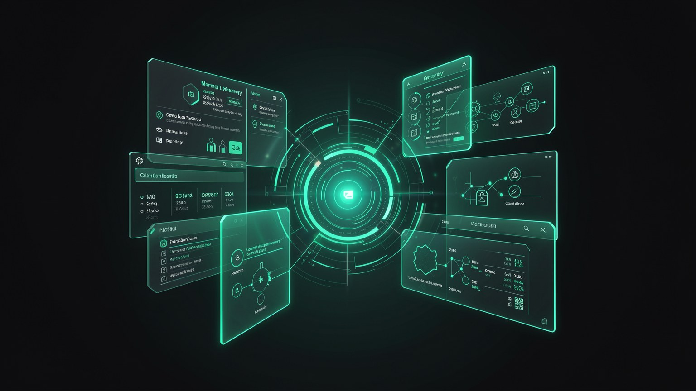

🔌 Proyecto 4: GitHub y documentos
Un agente que solo conversa es útil; un agente que lee tus fuentes es poderoso. En este proyecto conectas Hermes a tu código (GitHub) y a tus documentos, y puedes hacer preguntas sobre el repo y los archivos; todo funciona con el modelo local, en modo Vault, sin que nada privado salga de tu máquina.
🎯 Objetivo: conectar tus fuentes
En el proyecto anterior le diste memoria y una cara al agente. Ahora le darás ojos: el acceso a tu código en GitHub y a tus documentos locales. La diferencia es enorme: en lugar de responder solo con lo que «sabe» por el entrenamiento, el agente pasa a responder sobre el tuyo repo y los tuyos archivos. Y como se ejecuta localmente en Vault, ni el código propietario ni los documentos salen de la máquina.

📋 Qué vas a entregar
- •Un repositorio de GitHub conectado al agente.
- •Una carpeta/archivo de documentos que el agente puede leer.
- •Al menos una pregunta respondida una sobre el repo y otra sobre el doc.
- •La confirmación de que todo se ejecutó en Vault, sin filtraciones.
Requisitos previos: el agente Hermes ya conectado al modelo local (Proyecto 2 / módulo 3.2). Las conexiones de este proyecto se hacen mediante interfaz de Hermes (panel de conexiones): no hay un comando de CLI para «conectar GitHub», así que describimos la acción en la pantalla. Para el diagnóstico, sirven los comandos reales hermes status e hermes doctor.
Conceptos clave
Un puente del agente hacia una fuente externa (repo, carpeta).
El código o documento que el agente va a leer.
Modo airgapped: nada sale de la máquina.
El registro que muestra qué fuentes consultó el agente.
🐙 Etapa 1 — Conectar GitHub
La primera fuente es el GitHub. En el panel de conexiones de Hermes, autorizas el acceso a un repositorio. A partir de ahí, el agente puede leer los archivos, el historial de commits y la estructura del proyecto, y responder preguntas sobre él sin que tengas que abrir cada archivo manualmente.
Abre el panel de conexiones
En el dashboard de Hermes, ve a la sección de conexiones/integraciones y elige «GitHub».
Autoriza el acceso
Sigue el flujo de autorización en pantalla y selecciona solo los repositorios que quieres exponer al agente.
Confirma la conexión
El repo empieza a aparecer como conectado. Esa es la señal de que el agente ya puede verlo.
✓ Buenas prácticas
- ✓Conecta solo los repositorios necesarios: alcance mínimo.
- ✓Empieza con un repositorio pequeño para probar el flujo.
- ✓Revisa en Activity lo que leyó el agente la primera vez.
- ✓Mantén seleccionado el modelo local antes de preguntar.
✗ Evita esto
- ✗Dar acceso a toda tu cuenta «por pereza» de filtrar.
- ✗Conectar y enviar directamente a la nube: confirma el modo Vault antes.
- ✗Suponer que se conectó sin comprobar el estado de la conexión.
- ✗Olvidar desconectar los repositorios que ya no usas.
🔎 Cómo verificar esta etapa
El repo aparece como conectado en el panel. Si la conexión no se establece, ejecuta hermes status e hermes doctor en la terminal para diagnosticar el estado del agente antes de volver a intentarlo.
Conceptos clave
Dónde conectas GitHub y otras fuentes.
El paso que concede permiso de lectura al agente.
Conceder solo lo necesario, repositorio por repositorio.
Comandos reales para diagnosticar el agente.
📄 Etapa 2 — Leer documentos
La segunda fuente son tus documentos: PDF, notas, hojas de cálculo, contratos, manuales. En lugar de conectarte a un servicio remoto, apuntas el agente a una carpeta o archivo local. Lee el contenido directamente del disco y, precisamente por ser local, ningún byte del documento tiene que subirse a internet.
¿Nuevo por aquí? "Leer un documento" aquí significa que el agente extrae el texto del archivo y lo usa como contexto para responder. Los documentos grandes consumen la ventana de contexto (¿recuerdas el módulo 1.4 / 2.4?): por eso el modelo del agente tiene 64k, para que quepan el documento, la pregunta y la respuesta sin exceder el límite.
Selecciona la carpeta o el archivo
En la interfaz de Hermes, indica la carpeta de documentos o adjunta el archivo que quieres que lea el agente.
Deja que el agente indexe/lea
Procesa el contenido localmente. Un documento más largo tarda más en la primera lectura.
Mira el registro en Activity
El acceso al documento aparece en el log: confirma que sea el archivo correcto.
🔎 Cómo verificar esta etapa
Pide un resumen de una línea del documento. Si el resumen coincide con el contenido real del archivo (y no con algo genérico), el agente sí leyó la fuente local.
Conceptos clave
Carpeta/archivo en tu disco, leído sin conexión.
Procesar el contenido para poder consultarlo después.
El texto del archivo entra en la ventana de contexto.
El contexto grande permite incluir documento + pregunta + respuesta.
🔎 Etapa 3 — Preguntar sobre el repo y el doc
Con las fuentes conectadas, el agente se convierte en un copiloto que conoce tu material. En vez de buscar la información por tu cuenta, preguntas y él responde consultando el repo y los documentos reales. Ese es el momento en que la conexión aporta valor.
O GitHub y los documentos entran en el agente local, que responde sobre tu material. Todo dentro de la borde punteado de Vault — nada se transmite por Internet. Ese límite es lo que permite conectar fuentes propietarias de forma segura.
💬 Preguntas que ya vale la pena hacer
- •"Resume los últimos commits y qué cambió en ellos."
- •"Encuentra la función que hace X y explica cómo funciona."
- •"¿De qué trata este PDF? Enumera los 3 puntos principales."
- •"¿Hay inconsistencias entre el contrato y el documento de especificaciones?"
🔎 Cómo verificar esta etapa
La respuesta cita detalles específicos de tu repo/doc (nombre de archivo, función, fragmento del PDF) que solo existen en la fuente conectada. Si es genérico, el agente no leyó el contenido: revisa la conexión.
Conceptos clave
Responde con base en tu material, no solo en el entrenamiento.
Cuanto más concreta, mejor la respuesta fundamentada.
Un detalle real demuestra que la fuente se leyó.
Cruzar repo + doc revela inconsistencias.
🔒 Etapa 4 — Mantener todo en Vault
Conectar fuentes propietarias solo es seguro si la lectura ocurre 100% local. Ese es el papel del modo Vault: el agente usa el modelo de Ollama en tu máquina y no envía nada a la nube. Antes de preguntar sobre código de un cliente o un contrato, confirma que el modo Vault esté activado y que el modelo seleccionado sea el local.
🛡️ Lista de verificación de privacidad antes de preguntar
- •El modo Vault está activo (airgapped).
- •El modelo de la esquina inferior derecha es el local (p. ej., qwen3-coder-64k).
- •Solo están conectados los repos/carpetas necesarios.
- •Activity no muestra ninguna llamada externa.
💡 Consejo práctico
¿Quieres la prueba definitiva? Desconecta el cable de red / apaga el wi-fi y haz una pregunta sobre el repo. Si el agente sigue respondiendo, es porque la lectura y la inferencia se ejecutan realmente en tu máquina: exactamente lo que promete Vault.
🔎 Cómo verificar esta etapa
Con la red apagada, el agente todavía responde sobre el repo y el documento. Esta prueba sin conexión confirma que no hizo falta sacar ninguna fuente propietaria de la máquina.
Conceptos clave
Modo airgapped: lectura y respuesta 100 % locales.
Confirmado en la esquina inferior derecha de Hermes.
Código/documentación que no puede filtrarse: se queda en el Vault.
Sin conexión y aun así responde = privacidad real.
✅ Etapa 5 — Resultado: agente sobre tus fuentes
Pasaste de un agente que solo "sabía cosas del mundo" a un agente que conoce tu código y tus documentos — y responde sobre ellos sin que nada salga de la máquina. Este es el tipo de uso que realmente justifica ejecutarlo localmente: trabajar con material propietario que jamás podría ir a la nube.
🏁 Resultado esperado
- ✓GitHub conectado y el repo aparece como accesible.
- ✓Documento leído, con un resumen que coincide con el contenido real.
- ✓Preguntas respondidas con detalles de tu material.
- ✓Todo confirmado en Vault: funciona incluso sin conexión.
⚠️ Si algo no coincide
- ✗¿Respuesta genérica? El agente no leyó la fuente; revisa la conexión en el panel.
- ✗¿La conexión no se inicia? Ejecuta
hermes status/hermes doctor. - ✗¿Se bloqueó sin conexión? Confirma que el modelo seleccionado sea local, no en la nube.
Autocomprobación (opcional): ¿por qué es seguro conectar GitHub y documentos a Hermes local para los datos de propiedad exclusiva?
🎯 Resumen del proyecto
Siguiente módulo:
3.5 — Proyecto 5: Background agents 24/7 a $0